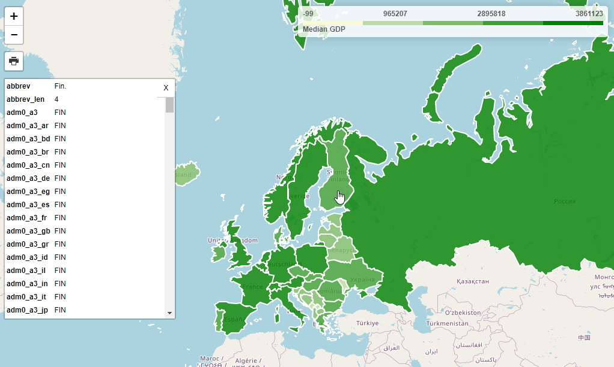
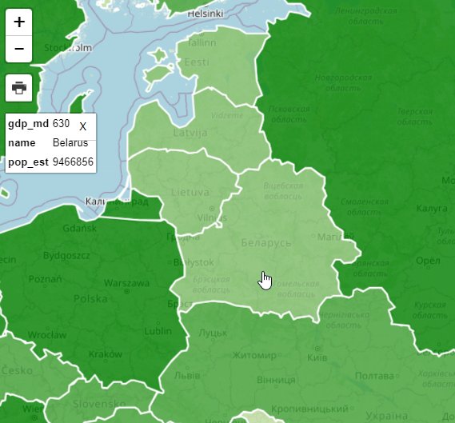
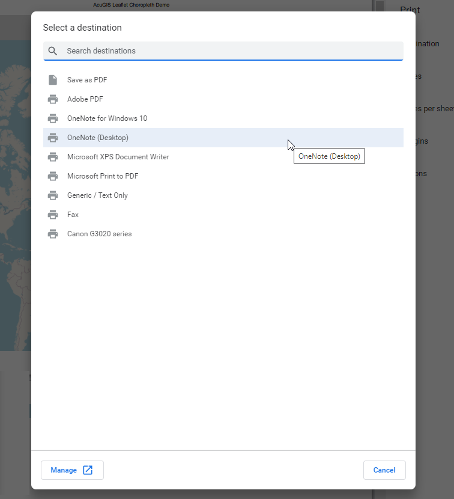

Leaflet Choropleth App¶
Table of Contents
Intro¶
GeoSuite includes a Leaflet Choropleth map using your pg_featurserv installation
The map can be access via:
It should appear as below:

This map uses Leafletjs and the Leaflet Choropleth Plugin:
Choropleth Maps¶
A Choropleth map renders coloring based on user defined ranges.
In the demo map, GDP is used to determine country coloring.
At top right, a legend is displayed that shows the color range

This metric we are using (gdp_md), along with the color and steps between is passed via the choroplethLayer as below:
// Add GeoJSON
$.getJSON(full_url, function (geojson) {
var choroplethLayer = L.choropleth(geojson, {
valueProperty: 'gdp_md',
scale: ['#fbfad4', 'green'],
steps: 5,
mode: 'q',
style: {
color: '#fff',
weight: 2,
fillOpacity: 0.8
The js for our Legend is below and updating the choropleth metric requires only updating the display name:
// Add legend
var legend = L.control({ position: 'topright' })
legend.onAdd = function (map) {
var div = L.DomUtil.create('div', 'info legend')
var limits = choroplethLayer.options.limits
var colors = choroplethLayer.options.colors
var labels = []
// Add min & max
div.innerHTML = `
<div class="labels">
<div class="quarter1">` + limits[0] + `</div>
<div class="quarter2">` + Math.round(((limits[limits.length - 1]-limits[0])*.25)+limits[0]) + `</div>
<div class="quarter3">` + Math.round(((limits[limits.length - 1]-limits[0])*.75)+limits[0]) + `</div>
<div class="quarter4">` + limits[limits.length - 1] + `</div>
</div>`
limits.forEach(function (limit, index) {
labels.push('<li style="background-color: ' + colors[index] + '"></li>')
})
div.innerHTML += '<ul>' + labels.join('') + '</ul> <span>'+humanize('Median GDP')+'</span>'
return div
}
legend.addTo(map);
});
featuresrv URL¶
If you need to change the url for any reason, go to /var/www/html/LeafletChoroDemo.html and edit line 155:
var full_url = "https://<YourIP>:9001/collections/public.countries/items.json?limit=100&continent=Europe";
Change <YourIP> to your server IP or hostname.
Note: If you are not using SSL, update the line to use ‘HTTP’ and port to 9000
Querying Features¶
In our demo app, we are only limiting the number of items retured (100) and the continent (Europe):
var full_url = "http://carmen.webgis1.com:9000/collections/public.countries/items.json?limit=100&continent=Europe";
As you can see, this results in a large number of Properies being displayed on click.
We can change this using the pg_featurserv query parameters.
Let’s add below to limit the Properties displayed to country name, estimated population, and gdp:
&properties=name,pop_est,gdp_md
Our url now becomes:
var full_url = "http://carmen.webgis1.com:9000/collections/public.countries/items.json?limit=100&continent=Europe&properties=name,pop_est,gdp_md";
Clicking on the map, the properties now becomes more manageable:

Relative Values¶
It’s important to note that while properties are the value from the database the Choropleth function shows values relative to our query.
var full_url = "http://carmen.webgis1.com:9000/collections/public.countries/items.json?limit=100&continent=Europe&properties=name,pop_est,gdp_md";
If we look at the shading for Belarus, for example, it’s GDP is rendered relative to the items (Europe, in our case)

Let’s now change our Query to remove ‘&continent=Europe’ and increase the limit to 500 to include all countries
var full_url = "http://carmen.webgis1.com:9000/collections/public.countries/items.json?limit=500&properties=name,pop_est,gdp_md";
As we can see, the GDP for Belarus relative to the world (and not just Europe) shows a deeper shade of green,as do the other countries of Europe as we are now seeing GDP relative to all countries and not just Europe.

Print¶
Printing for the demo app is enabled by the leaflet.browser.print plugin:
The print plugin offers Portrait, Landscape, Auto, and Custom options
1. Click the print icona and select Auto

2. On click a new window will open atop the current window as below. Select “Save as PDF” from the dropdown.

3. Depending on your device, you may have additional print/save options as well

Using GeoServer¶
As you may have noticed, our map requires only a json feed.
In the demo, we are using pg_featurserv, but we can change this to GeoServer with 3 simple changes:
1. In your GeoServer instance, go to Layer Preview and select GeoJson under WFS for the USA Popular layer

2. Substiture the full url for pg_featurserv url
var full_url = "http://domain.com/geoserver/topp/ows?service=WFS&version=1.0.0&request=GetFeature&typeName=topp:states&maxFeatures=50&outputFormat=application/json";
3. Update line 159 to FAMILIES
valueProperty: 'FAMILIES',
4. Update line 208 to FAMILIES
div.innerHTML += '<ul>' + labels.join('') + '</ul> <span>'+humanize('FAMILIES')+'</span>'
5. Refreshing the page should now show our USA Population layer with FAMILIES as you metric: